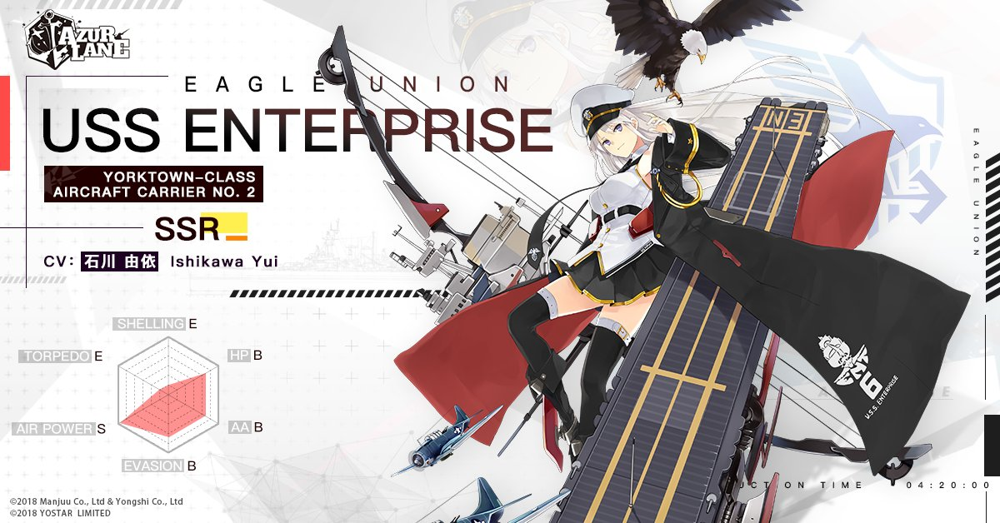

Enterprise

| Enterprise is one of the main protagonists in Azur Lane,
as well as in the game as in the anime series. She is an aircraft carrier for the Eagle Union,
and her real counterpart is USS Enterprise (CV-6), also nicknamed "The Grey Ghost" due to her having
been announced being sunk several times by Japanese Navy, but coming back every time. Actually, Enterprise never sank,
unlike her two sisters Yorktown and Hornet. Enterprise can be obtained mainly by building in special construction,
but also as a reward for some quests and even was rewarded in a special login campaign for celebrating the anime series. |